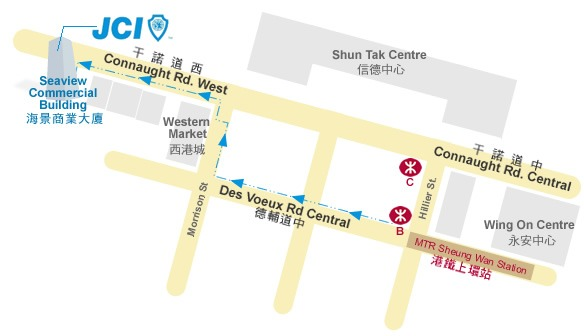

最佳僱員僱主選舉 2020
有關『最佳僱員僱主選舉』
最佳僱員僱主選舉 (BEEA) 表彰了傑出的員工和僱主, 通過更多的溝通和理解促進了更好的公司文化, 進而創造了更加和諧的工作環境和更高的生產效率。
最佳僱員僱主選舉
勞資關系壹直是人們關註的壹個社會熱點。間或新聞披露部分企業拖欠員工薪水，也有報道過良心企業對於員工的福利饋贈。雇主對於支出的精打細算和雇員對於酬勞的高期待似乎把雇主與員工之間的供給關系變得緊張起來。
有鑒於此，本會於2015年推出首屆最佳僱員僱主選舉，得到了許多香港中小公眾企業聯合會以及各個組織的支持，得到了超過6家媒體以上的報導。通過報導，最佳僱員僱主選舉向香港社會傳達了“勞資雙贏”的重要性以及僱員僱主的關系與企業形象呈正向關聯。去年，我們為了更好的順應時代的變化和發展，我們在原有的評審基礎上增加了一些擴充。譬如，企業社會責任，企業社會責任是企業在遵守商業道德和促進經濟發展的同時所承擔的改善員工及其家屬、當地社區，乃至整個社會的生活品質的責任。
勞資同牽、攜手並肩
香港政府於2019年11月下旬發布的一項預報預測，香港經濟將在2019年萎縮1.3％（GDP比上一季度萎縮3.2％，連續兩個季度呈現負增長狀態），標誌著十年前全球金融危機以來的第一年經濟衰退。經濟衰退的主要原因可以歸因於社會動盪，全球經濟同步放緩以及中美之間的貿易緊張局勢。許多公司，特別是現金流量有限的中小企業，受到嚴重影響。
鑑於當前的形勢和對2020年的負面經濟預測，我們希望透過活動，可以促進及宣傳企業如何在不損害勞資雙方關係的情況下，對抗經濟衰退。我們亦希望透過獎項，表揚表現傑出的僱員僱主，展現於持續發展、危機決策與管理等範疇的優秀範例，鼓勵各中小企跟隨著並肩作戰，透過寒冬看春天。
有關『最佳僱員僱主選舉』
開幕典禮
2月28日
我們將會在活動 Facebook 專頁上載影片公佈活動參加資格及細則、問卷調查結果、以及主禮嘉賓分享。開幕禮之後，我們更會不定期上載不同嘉賓分享、活動相關資料、以及參加者分享， 敬請留意及關注！
提名階段
2月28日 - 4月24日
如申請人在3月31日或之前報名及提交所有相關文件，可享行政費用港幣一千元優惠！
審核面試
5月16日
Mauris cursus magna at libero lobortis tempor. Suspendisse potenti. Aliquam interdum vulputate neque sit amet varius. Maecenas ac pulvinar nisi. Fusce vitae nunc ultrices, tristique dolor at, porttitor dolor. Etiam id cursus arcu, in dapibus nibh. Pellentesque non porta leo. Nulla eros odio, egestas quis efficitur vel, pretium sed.
頒獎典禮
7月10日
Suspendisse ac mi at dolor sodales faucibus. Nunc sagittis ornare purus non euismod. Donec vestibulum efficitur tortor, eget efficitur enim facilisis consequat. Vivamus laoreet laoreet elit. Ut ut varius metus, bibendum imperdiet ex. Curabitur diam quam, blandit at risus nec, pulvinar porttitor lorem. Pellentesque dolor elit.
報名及選舉
選舉程序
- 提名人必須填妥相關提名表格：「最佳僱員提名表格」或 「最佳僱主提名表格」
- 每位獲提名候選人必須準備一份PowerPoint，內容必須包括自我介紹及講解為可應為自己是最佳僱員或僱主。獲提名候選人更可提供更多方面的資訊, 讓評審更多方面了解參加者(如照片、短片及獎狀等)
- 提名人必須在提名階段日期內，連同以上的PowerPoint，電郵提名表格至項目負責人(beea@jcidragon.org.hk)，經審核確認參賽資格。電郵標題請註明「最佳僱員僱主選舉2020報名」
- 我們將會通過電子郵件確認你的報名。假如你在48小內仍未收到我們的電郵確認，請致電9792 3494或電郵至andrew.cheung@jcidragon.org.hk聯絡
- 每位獲提名候選人必須出席審判日接受審核面試，否則將被取消選舉資格
- 得獎者名單將會在六月上旬宣佈
參加資格及細則
- 是次選舉將由僱主組別與僱員組別聯合單位競逐獎項，而必須以提名方式競逐
- 獲提名的候選人和提名人必須為同一公司
- 是次選舉提名報名費用為港幣五百元。每位得獎者將額外收取港幣六千五百元行政費用
- 獲提名之僱員，必須在香港註冊公司最少工作一年或以上
- 獲提名之僱主，必須在香港註冊及營運最少2年或以上
- 獲提名候選人可被要求呈交額外資料式接受評選團訪問，以作甄選之用
- 獲提名候選人不得是當時任何刑查對象
- 最後裁決以評選團之決定為準
- 如獲提名候選人的資料被證實虛假，其資格將被取消
上屆回顧


聯絡我們
如有查詢，歡迎聯絡籌委會主席張展榕先生
聯絡方法
電 話 : 9792 3494
電 郵 : beea@jcidragon.org.hk
地 址 : 上環幹諾道西 21-24 號海景商業大廈 21 字樓
